LLM 평가와 IRT
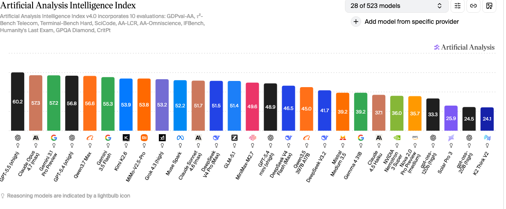
LLM을 평가한다고 하면 보통 "벤치마크 정확도 몇 %"라는 한 숫자로 끝난다. 100개 문제 중 몇 개를 맞혔는지를 본다는 뜻이다. 그런데 이 숫자에는 따져볼 게 생각보다 많다. 우선 100개 문항에 똑같이 1점씩 주는 게 맞을까? 어떤 문항은 거의 모든 모델이 맞히는 쉬운 문제이고, 어떤 문항은 잘하는 모델과 못하는 모델을 또렷이 갈라놓는 문제인데, 정확도는 둘을 똑같이 1점으로 친다. 그래서 쉬운 문항을 많이 맞힌 모델과 어려운 문항을 골라 맞힌 모델이 똑같은 점수를 받을 수 있다. 즉, 두 모델의 점수가 같다고 성능이 같은 것은 아니다 (물론 어려운 문제를 맞히는 모델이 쉬운 문제도 맞힐 확률이 높지만, 꼭 그렇지는 않다). 게다가 같은 모델을 같은 벤치마크로 다시 평가해도, 프롬프트를 조금만 바꾸면 점수가 꽤 바뀌기도 한다[54]. 오르는 경우도 있지만, 따로 최적화하지 않으면 대개 떨어진다. 이런 디테일한 차이는 보통 정확도로는 잘 드러나지 않는다.
익숙한 예를 하나 들어 보자. 대학수학능력시험의 표준점수다. 같은 문제를 푼 다른 학생들이 많이 틀렸다면 내가 그걸 맞혔을 때 표준점수가 더 올라가고, 다들 쉽게 맞힌 문제라면 맞혀도 점수가 크게 오르지 않는다. 출제자가 문항마다 매겨 둔 배점만으로는 실력을 가늠하는 데 한계가 있다는 발상이다. 정답률 낮은 주관식 30번을 맞힌 학생도 4점, 정답률 높은 객관식 둘을 맞힌 학생도 4점인데, 그 둘이 정말 같은 실력일까? 아니다. 문항마다 난이도가 다르고, 그래서 어떤 문항을 맞혔는지가 실력에 대해 더 많은 것을 말해 준다. 이 점을 정면으로 다루는 것이 IRT(Item Response Theory, 문항반응이론)다. 원래 사람의 시험을 분석하려고 심리측정 분야에서 개발된 틀이다. 학생(응시자, respondent)에게는 겉으로 드러나지 않는 latent 능력 θ가 있고, 각 문항에는 변별력(능력 차이를 얼마나 잘 가르는가)과 난이도가 있다고 본다. 어떤 응답이 맞고 틀리는지를 이 θ와 문항 파라미터의 함수로 모델링한다. 정확도가 "몇 개 맞았나"라면, IRT는 "어떤 문항을, 그 문항이 얼마나 정보량이 많은 문항인가"까지 함께 본다.
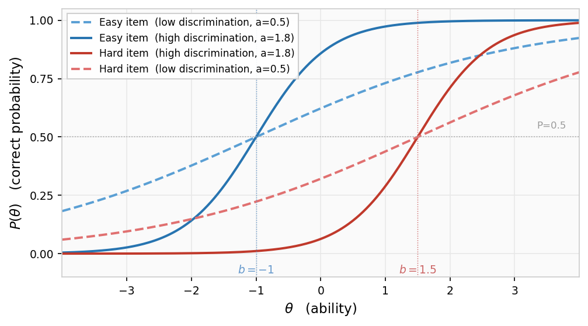
최근 이 IRT를 LLM 평가에 가져오는 연구가 부쩍 늘었다. NLP 쪽에 IRT 튜토리얼[1]이 따로 생기고, "AI 평가도 사람 시험 보듯 해야 한다"는 포지션 논문[2]이 나올 정도다. 이 흐름을 체계적으로 정리한 서베이[70]도 이미 400편을 넘는 문헌을 다룬다. 연구하다 보니 내 최근 관심사도 마침 이 쪽이라, 이번 기회에 정리해두었다.
1. 문항(question 혹은 item)을 검증하는 방향
가장 오래된 갈래는 벤치마크의 문항 자체를 IRT로 들여다보는 것이다. [3]에서는 2016년에 NLP 평가에 IRT를 처음 들여오며, "모든 평가 문항이 같은 난이도·변별력을 갖는다"는 암묵적 가정에 의문을 던졌다. 같은 해 ML 쪽에서도 독립적으로 비슷한 문제의식이 나왔다. [41]에서는 분류기를 평가할 때 모든 테스트 인스턴스를 동등하게 취급하는 관행에 IRT로 의문을 제기했다. 두 계열은 이후 수렴해 [23]에서 AI 전반을 아우르는 분석 틀로 정리됐다. 같은 흐름에서 [112]에서도 과제 기반 벤치마크의 한계를 지적하며 구성 개념(construct) 중심의 심리측정 평가로 전환을 주장했다. [37]은 NLP로 좁혀 29개 데이터셋·18개 사전학습 모델로 분석을 확장해, SNLI·MNLI 같은 유명 벤치마크가 이미 당시 최신 모델들을 제대로 변별하지 못한다는 것을 2021년에 밝혔다. 같은 해 [4]에서는 IRT로 리더보드를 다시 설계해, 정답 레이블 자체가 잘못된 문항, 너무 쉽거나 어려워서 변별력이 없는 문항, 모델이 추론이 아닌 표면적 단서(annotation artifact)[52]로 맞히는 문항 같은 것들을 찾아내는 법을 보였다.
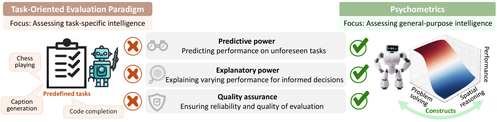
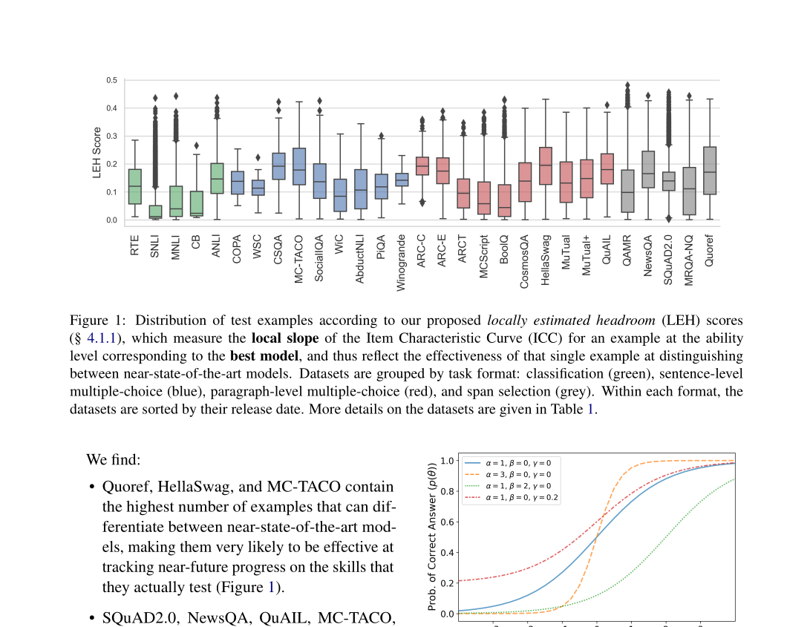
이 진단이 실제로 무엇을 잡아내는지는 MMLU[53]를 전문가들이 손으로 재검수한 [24]이 잘 보여준다. 도메인에 따라 문항 오류율이 0%에서 57%까지 벌어졌고, 오류를 바로잡자 모델 순위가 뒤집혔다. [25]에서는 한 발 더 들어가, 문항 표면의 구체적 결함 유형(부정 표현, 허수 오답 등)이 IRT 난이도·변별력 파라미터를 실제로 어떻게 왜곡하는지까지 연결했다. 텍스트만으로 문항의 IRT 파라미터를 자동 예측하려는 시도는 2020년 [47]에서 시작됐고, [44]에서 자연어 문항 전반으로 이어졌다. 같은 텍스트 기반 예측을 DIF로 확장한 연구[92]도 나왔다. 4만 건이 넘는 K-11 평가 문항에 트랜스포머를 파인튜닝해, 어떤 단어가 집단 간 문항기능차이를 유발하는지를 설명 가능한 AI로 식별했다. 교육 수학 문항 25만 건을 대상으로 학생 응답 시뮬레이션을 경유해 난이도를 예측한 사례[71]에서는 실제 IRT 파라미터와 r ≈ 0.78을 달성했다. 텍스트 기반 난이도 예측 연구 37편을 정리한 서베이[75]에서는 최신 트랜스포머 모델이 수동 특성 설계 없이 r = 0.87까지 달성한다고 정리한다. 반면 LLM이 직접 난이도를 예측하게 하면 IRT 파라미터와 중간 정도의 순위 상관에 그치며 체계적으로 과소평가하는 경향이 있다는 보고[74]도 있다. 추론 과정을 생성하게 하거나 다수 샘플을 집계해 LLM의 MCQ 난이도 예측을 강화하는 방법[99]도 AIED 2025에 발표됐다. LLM을 전문가 난이도 평가자로 직접 활용하면 수학 문항에서 실제 난이도와 중-강 상관을 달성한다는 보고[101]도 있다. LLM이 추출한 인지·언어 특성을 트리 기반 모델에 입력하면 r = 0.87의 예측력이 나온다는 결과[102]도 나왔다. 응시자 후보 답안의 그럴듯함(plausibility) 점수 엔트로피로 난이도를 추정하는 Q-Daps[103]는 ACL 2026에서 발표됐다. 독해 문항에서도 GPT-4o가 미묘한 함정 표현과 필요 추론을 탐지해 난이도를 자동화하는 가능성이 확인됐다 [106]. 코드 생성 벤치마크(HumanEval+, ClassEval)에서도 IRT로 과제 난이도와 변별력을 분석해 구조적 취약점을 찾아낸 작업[64]이 나왔다. 수학·프로그래밍·추론 등 6개 도메인에 IRT와 Glicko-2를 함께 적용해 통일된 난이도 점수를 부여하고 LLM의 난이도별 일반화를 프로파일링하는 Easy2Hard-Bench[88]도 같은 방향에 있다. 중국 대학수학능력시험(GAOKAO)에서 LLM의 고득점이 실제 강한 역량을 반영하는지 심리측정 분석으로 검증한 연구[94]도 나왔다. 더 큰 규모로는 [5]이 11개 벤치마크 4만여 문항을, [26]이 6개 벤치마크 수만 문항을 IRT로 분석해 포화·오염을 진단하고 더 작고 깨끗한 벤치마크를 구성했다. [26]은 그 과정에서 여섯 벤치마크가 재는 능력의 약 80%가 사실 하나의 공통 인자로 수렴한다는 것까지 드러냈다. 이름도, 형태도, 주제도 다른 벤치마크들이 결국 비슷한 능력 축을 재고 있다는 뜻이다. 공통된 발상은 점수를 매기기 전에 자(벤치마크) 자체부터 검증한다는 것이다. 이 시각은 비전-언어 모델 평가로도 이어진다. [56]에서는 IRT를 이미지·텍스트·크로스모달 세 차원으로 확장한 M3IRT를 제안해, 단일 모달리티만으로 풀리는 쉬운 문항과 진짜 멀티모달 추론이 필요한 문항을 구분했다. 데이터 시각화 리터러시 문항에서도 VLM(비전+텍스트)이 텍스트 단독보다 낮은 오차로 난이도를 예측한다는 보고[105]가 나왔다. 추론 벤치마크에서도 4PL-IRT를 쌍(pair) 단위로 적용해 기존 정확도·F1보다 더 안정적인 추론 능력 추정을 제공하려는 시도[76]도 나왔다. 한편 IRT 바깥에서도, 변별력과 포화 여유(anti-saturation headroom)를 독립 지표로 명시화해 벤치마크 건강도를 수치로 재는 프레임워크[63]도 나왔다. 이름은 달라도 IRT의 변별력 파라미터(a)와 LEH 개념을 사실상 같은 목적으로 쓴다. 60개 벤치마크를 가로지르는 대규모 분석[100]에서는 절반 가까이가 이미 포화 상태이며, 전문가가 큐레이션한 벤치마크가 크라우드소싱 방식보다 포화에 더 강하다는 결과가 나왔다.
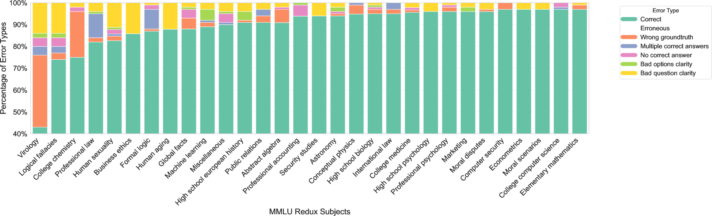
IRT가 기존 벤치마크 풀에서 정보 있는 문항을 찾아내는 방향이라면, 처음부터 동적으로 데이터를 쌓는 방법도 있다. Dynabench[49]는 현재 모델이 틀리는 예제를 사람이 직접 제출해 계속 어려운 문항을 공급하는 플랫폼이다. IRT 정제가 "있는 풀을 깨끗이 고르는" 방식이라면, Dynabench는 "애초에 변별력 있는 문항을 동적으로 모으는" 방식으로, 같은 문제(벤치마크 포화)를 다른 쪽에서 접근한다. 이 문항 분석 시각은 RAG 시스템 평가로도 이어진다. [78]에서는 895개 합성 Q&A에 IRT를 적용해 각 문항의 난이도·변별력을 추정하고 데이터셋의 질적 다양성을 수치화했다. RAG 시스템 평가를 위한 합성 시험을 코퍼스에서 자동 생성하고 IRT로 시험의 정보량과 타당도를 검증하는 방법[91]도 ICML 2024에 발표됐다.
2. 평가의 효율성을 위한 방향
두 번째 갈래는 효율이다. 1번이 "이 자가 제대로 된 자인가"를 따졌다면, 여기서는 자가 믿을 만하다고 전제하고 "얼마나 적은 문항으로 같은 결론에 도달하는가"를 묻는다. 같은 동기에서 두 갈래로 나뉜다. 한 번 보정해 두고 정적으로 부분집합을 고르는 길과, 응답마다 다음 문항을 동적으로 고르는 적응형 테스트(adaptive testing) 길이다. 둘 다 IRT의 문항정보함수(item information function)를 공통 도구로 쓴다. 어떤 문항이 특정 능력대를 가장 잘 변별하는지 계산해, 정보가 많은 문항만 골라 평가를 줄이는 것이다.
정적 축소 쪽은 tinyBenchmarks[6]가 대표적이다. MMLU 1만 4천 문항을 IRT로 한 번 보정해 두고 정보가 많은 100문항만 추리면, 그 100문항만으로 모델 정확도를 거의 그대로 추정할 수 있다.
적응형 쪽은 ATLAS[7]가 대표적이다. 매 문항 뒤에 모델의 능력 추정을 갱신하면서 가장 정보가 많은 다음 문항을 뽑는다. 사람 시험의 computerized adaptive testing과 같은 구조다. 거의 같은 시기에 나온 Fluid Benchmarking[27]도 같은 CAT 구조를 택했다. IRT 능력 추정이 타당도(validity)를 높이고, 동적 문항 선택이 분산을 낮춘다는 두 효과를 분리해 보이면서, MMLU를 50배까지 압축했다. 기계학습 평가 쪽에서도 독립적으로 같은 발상이 나왔다. Active Testing[50]은 베이즈 실험 설계로 테스트 예제를 능동적으로 선택해 평가 비용을 줄인다. ML 능동 학습과 CAT가 "가장 정보가 많은 다음 예제를 고른다"는 원리에서 수렴한다. 에이전트 벤치마크에서도 IRT에서 착안해 응답률 30-70%대 중간 난이도 과제만 골라 평가하면 44-70%의 과제를 줄이면서 순위 안정성을 유지할 수 있다[66]. IRT 없이도 강화학습 기반 선택 정책으로 평가 예제를 능동적으로 고르면서 나머지 성능을 예측하는 접근[83]도 같은 효율 목표를 달성한다. 의료 LLM 평가에 적용한 사례[69]도 있다. 38개 LLM을 대상으로 전체 문항의 1.3%만 써도 전체 뱅크 추정치와 r = 0.988의 상관을 달성했다. 수식 정리 증명(theorem proving) 벤치마크 miniF2F에 IRT를 적용해 문항별 난이도·변별력을 주석 처리하고 적응형 선택으로 전체의 23%만 사용해도 동등한 변별력이 가능함을 보인 연구[82]도 나왔다. 80개 LLM으로 USMLE 연계 벤치마크를 도메인별 IRT 프로파일링한 사례[80]에서는, 전체 정확도로는 높은 순위임에도 특정 도메인에서는 하위 모델에 역전당하는 패턴이 확인됐다. 다차원 IRT와 적응형 문항 선택을 결합해 65개 모델 · 10만여 문항(WILD)에서 16개 문항만으로 MAE 7% 미만을 달성하며 평가 토큰 비용의 85%를 절감한 연구 [114]도 나왔다. 다만 어느 쪽이든 IRT가 작동하려면 calibration이 먼저 끝나 있어야 한다. 이름은 측정학에서 그대로 가져왔다. 저울·온도계의 눈금을 알려진 기준에 맞춰 매기듯, 다수 모델·다수 문항의 응답 행렬을 모아 문항 파라미터(변별력·난이도)를 추정해 두는 과정이다. 모델이 새로 나올 때마다 응답을 새로 수집해 재추정해야 하니 그 자체가 비용이다. 이 추정 문제를 변분 베이즈(variational Bayes)로 속도와 표현력을 함께 높이려는 시도[48]도 있다. IRT는 본래 이진 응답(맞/틀)을 전제하지만, 응답 정확도와 Chain-of-Thought 길이를 함께 모델링한 확장[68]도 제안됐다. 추론 능력이 강할수록 CoT가 길어지는 음의 상관 구조가 여러 벤치마크에서 일관되게 관찰됐다. [8]에서는 여기에 두 가지를 더 얹는다. 문항 내용만 보고 난이도를 예측하는 모델을 학습해 calibration 비용을 amortize한다. 한 번 학습해두면 새 문항·새 모델에 대해선 응답을 다시 수집하지 않고도 난이도를 추정할 수 있다는 의미다. 그 예측기를 다시 신규 문항 생성에까지 연결한다. 22개 벤치마크·172개 모델 규모의 결과다. 추정 자체의 계산 비용을 줄이는 시도도 이어진다. [57]에서는 IRT 추정을 연속 행렬 분해 하위 문제로 재공식화해 기존 대비 수십 배 속도를 달성하면서 추정 정확도는 유지했다. 이진 정오 응답과 연속 점수를 함께 지원하는 통합 프레임워크[73]도 제안됐다. 70개 LLM·5개 벤치마크에서 전체 문항의 3%만 써도 능력 추정이 안정적으로 유지됐다.
[그림 필요] arXiv:2604.01418 (Krumdick et al., WILD) Figure — 16개 문항으로 MAE 7% 미만, 85% 비용 절감 결과 그림 캡처 필요 (arXiv HTML 없음)
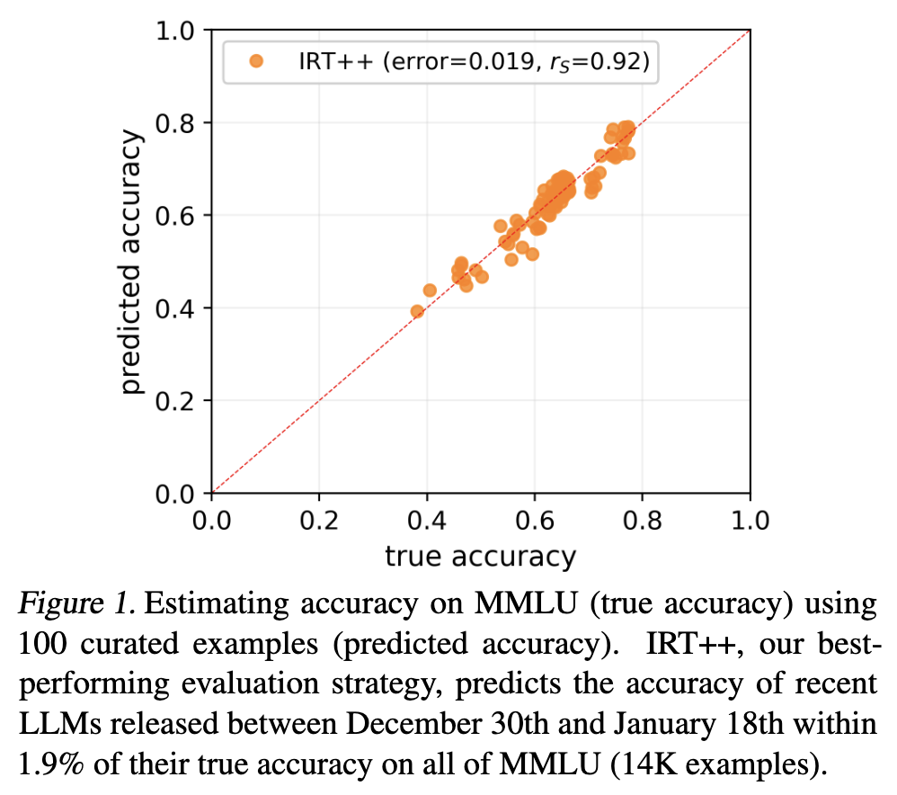
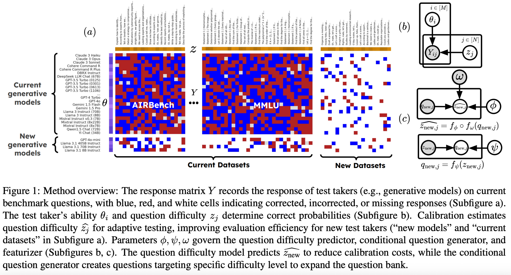
이 효율화가 IRT만의 것은 아니다. anchor points[20]는 모델들이 confidence를 비슷하게 매기는 문항을 클러스터로 묶고, 그 대표 문항 몇 개만으로 전체 정답률을 추정한다. 문항 파라미터를 추정하는 calibration 없이 새 모델에 바로 쓴다 (실제로 tinyBenchmarks가 anchor points의 한계를 짚으며 IRT로 넘어간 후속이다). [21]에서는 IRT 대신 벤치마크 설계 자체(문항 수·시나리오 수·모델 수)를 변수로 두고, 어느 설계를 바꿨을 때 모델 순위가 얼마나 흔들리는지로 효율화의 trade-off를 직접 잰다. 같은 팀의 후속 연구인 BenchBench[58]는 벤치마크 간 순위 상관을 표준화해, 새 벤치마크가 기존 것과 얼마나 일치하는지 비교하는 절차를 체계화했다. [72]에서는 15개 벤치마크를 교차 순위 일관성·변별력· 능력 정렬 이탈이라는 세 지표로 체계적으로 비교해, 벤치마크 간 품질 격차를 수치화했다. IRT와 구조적으로 유사하지만 심리측정 모형 없이 난이도를 추정하는 접근도 있다. [81]에서는 모델이 문항을 맞히면 역량 점수가 오르고 틀리면 그 문항의 난이도 점수가 올라가는 양방향 전파를 30개 LLM·35,550개 문항에 적용해, IRT 기준선보다 높은 인간 판정 일치율(90%)을 달성했다. IRT 계열은 calibration 비용을 치르는 대신 문항 하나하나를 해석할 수 있고, 비IRT 계열은 그 비용 없이 바로 쓰이되 해석 가능성은 포기한다. 같은 목표를 다른 도구로 겨냥하는 구도다.
방법이 정교해질수록 공통의 약점도 드러난다. 11개 방법을 19개 벤치마크에서 비교한 [28]은 이 한계를 수치로 보였다. calibration에 쓰인 모델 집합보다 능력이 높은 새 모델에서는 IRT든 비IRT든 추정이 급격히 무너지고, 단순 무작위 추출보다 나을 게 없는 경우도 많다. 더 강한 모델이 나올 때마다 calibration 대상을 다시 꾸려야 한다는 뜻이다. 적응형 벤치마킹에서 발생하는 또 다른 편향도 있다. 모델 탐색이나 프롬프트 최적화에 같은 문항을 쓰고 평가도 그 문항으로 하면 선택 편향으로 점수가 부풀어 오르는 '승자의 저주 (winner's curse)'가 생기며, 이를 문항 수준의 부트스트랩으로 보정하는 프로토콜 [84]이 제안됐다. 한계는 또 있다. 지금 까지의 방법은 대체로 정답/오답 이진 응답을 전제하는데, ROUGE나 LLM-as-a-Judge 점수 같은 연속 점수로 적응형 테스트를 넓히려는 시도[29]도 나오고 있다. 개방형 응답으로도 CAT를 확장하는 시도[117]도 나왔다. 생성형 IRT(GIRT) 모델로 LLM 응답에서 지식 수준을 추정하고 미관측 문항에 대한 응답을 예측해, 이진 정오 채점 없이도 적응형 문항 선택이 가능하다. 한편, 이 효율화 발상이 LLM 시대에 처음 나온 것은 아니다. 사람이 직접 판정해야 하는 챗봇 응답 평가에도 IRT를 적용해 어노테이션 비용을 줄이는 시도[42]가 이미 2020년에 있었다.
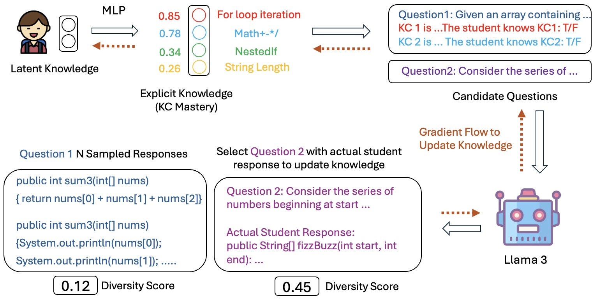
3. 모델의 능력을 더 잘 표현하기 위한 방향
세 번째는 정확도라는 한 숫자 대신 모델의 능력을 더 풍부하게 표현하려는 갈래다. 출발점은 단일 스칼라 θ의 한계다. JE-IRT[9]는 LLM 응답에 전통적 2PL을 적합시켜 보면 변별력이 0이거나 음수인 문항이 수두룩하다는 것을 보였다. 심지어 능력이 높을수록 오히려 더 틀리는 문항마저 있어, 문항특성곡선(item characteristic curve)이 실제 응답을 거의 설명하지 못한다. 단일 능력 축 하나로는 LLM을 줄 세울 수 없다. 그래서 JE-IRT는 모델과 문항을 같은 벡터 공간에 임베딩해, 벡터의 방향으로 능력의 종류를, 크기로 난이도를 나타낸다.
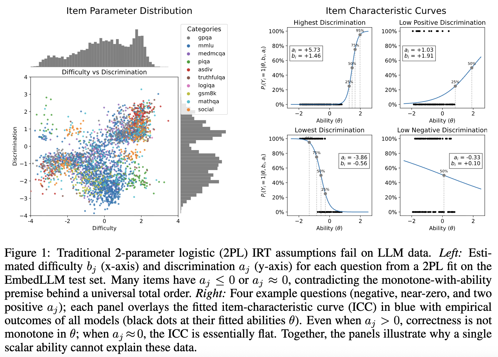
[10]에서는 IRT로 모델의 능력을 압축된 벡터로 표현해 모델 라우팅이나 벤치마크 성능 예측에 쓴다. IRT-Router[11]는 쿼리 난이도와 모델 능력을 IRT로 모델링해 비용 대비 성능이 좋은 모델로 질의를 보낸다. 평가가 "줄 세우기"를 넘어 "이 모델이 어떤 문제를 어느 수준으로 푸는가"를 기술하는 방향으로 확장되고 있다.
이 방향도 IRT로만 가는 건 아니다. EmbedLLM[30]은 IRT 공식 없이 인코더만으로 모델을 compact 벡터로 임베딩해 라우팅·성능 예측을 해낸다. 그렇다면 IRT를 굳이 쓰는 이유는 해석 가능성과 데이터 효율로 좁혀진다. "단일 스칼라로는 부족하다"는 출발점은 다차원 IRT로도 다룰 수 있다. [31]은 400개 넘는 모델을 다차원 IRT로 분석해 성능 분산의 대부분이 3~8개의 해석 가능한 능력 차원으로 설명된다는 것을 보였다. IRT를 쓰지 않아도 같은 방향의 결론이 나온다. [38]에서는 29개 LLM을 27개 인지 과제에 걸쳐 베이즈 요인분석으로 분석해, 능력 분산의 대부분이 추론·이해·언어 모델링 세 요인으로 설명된다고 보고했다. [32]는 수학 영역을 35개 세부 능력으로 분해해 모델별 강·약점 프로파일을 그렸다. 상황 판단 검사(SJT)와 MIRT를 결합해 페르소나 조건화된 LLM 행동이 안정적 잠재 특성을 형성하며 외부 벤치마크 성능을 예측한다는 분석 [108]도 나왔다. 어느 방법이든 θ는 스칼라 하나가 아니라 여러 능력 차원의 벡터로 표현된다. IRT가 연속 잠재 변수로 능력을 표현한다면, 교육 심리학의 인지 진단 모형(CDM)은 능력을 이산 속성 벡터로 나타낸다. [59]에서는 CDM을 LLM 평가에 적용해 텍스트 임베딩으로 Q-행렬(문항-속성 관계)을 자동 구성하고, LLM의 세부 능력 프로파일을 추출했다. CDM은 응답 데이터가 희소할 때 추정이 불안정해지는 문제가 있는데, LLM의 사전 지식을 CDM 초기화에 활용해 이 희소성 문제를 완화하는 접근[85]도 제안됐다. LLM 임베딩을 역할별로 미세조정해 CDM의 행동 공간과 의미 공간을 정렬하는 방식[87]도 같은 방향에서 나왔다. 에이전트 평가에서는 한 발 더 나아가, 에이전트 능력을 LLM 능력과 scaffold 능력으로 분리하고 과제 특성(이슈 내용·코드·테스트)까지 모델에 반영하는 IRT 기반 예측 프레임워크[65]도 나왔다. 이 모든 분석은 행동 행렬을 외부에서 쌓아 추정하는 방식이다. 반대로 LLM 표현 공간에 문제 난이도가 이미 선형적으로 인코딩돼 있다는 사실도 밝혀졌다. 60개 모델에 선형 프로브를 적용한 실험[95]에서 인간이 레이블한 난이도가 ρ ≈ 0.88로 추출됐고, 강화학습 훈련이 이 신호를 강화했다. 생성 전 은닉 상태(pre-generation activations)만으로 성공 여부를 예측하는 선형 프로브를 훈련한 결과[118], 인간 IRT 난이도를 ρ = 0.83–0.87로 재현하고 모델별 난이도 신호(ρ = 0.40–0.64)도 분리했다. 이 프로브 기반 라우팅으로 추론 비용을 70% 절감하면서 단일 최강 모델을 초과하는 성능을 달성한다. 특정 어텐션 헤드가 쉬운 문제와 어려운 문제에 반대 방향으로 활성화되는 구조[96]도 발견됐다. 다국어 모델에서는 이 표현이 얕은 레이어에서 언어 중립적으로, 깊은 레이어에서 언어별로 분리됨이 확인됐다[97]. 출력 토큰 생성 없이 초기 은닉 상태의 마르코프 체인 가치 함수로 난이도를 추정하는 접근[104]도 제안됐다. 벤치마크 성능에서 IRT로 추출한 잠재 난이도를 실제 인간 과제 완료 시간에 연결하면 R² = 0.81의 예측력이 나온다는 보고 [98]도, θ가 추상적 수치 이상의 실용적 함의를 가질 수 있음을 보여준다. IRT 스케일에서 한 걸음 더 나아가, [109]에서는 18개 루브릭 기반 일반 척도(general scale)로 과제 특성을 기술해 15개 LLM을 63개 과제에서 포화 없이 분석하고 분포 외 성능 예측까지 가능함을 보였다.
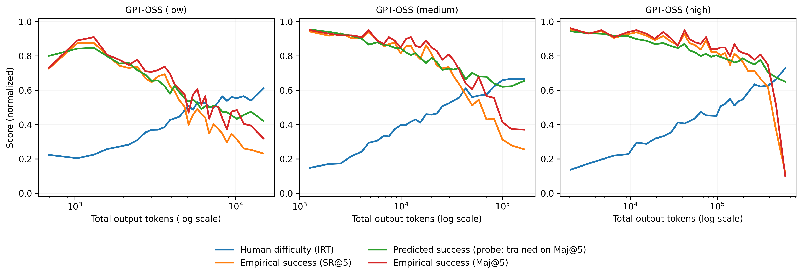
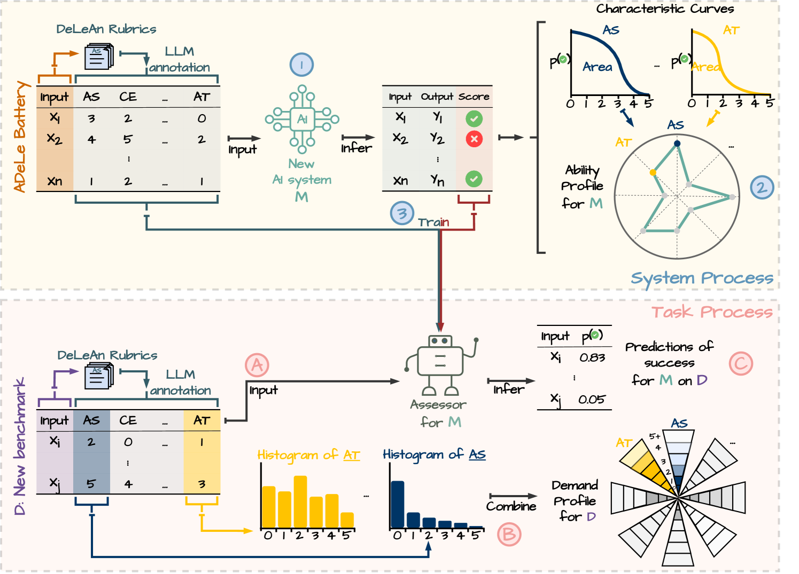
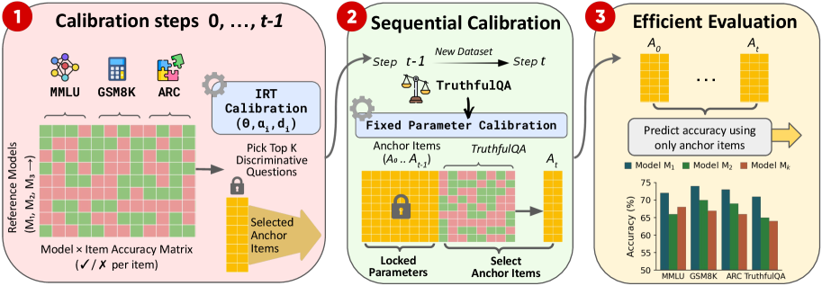
4. 평가자(judge) 자체를 진단하는 방향
앞의 세 갈래는 모두 LLM을 응시자로 놓고 문항·벤치마크·능력을 분석한다. 그런데 LLM이 거꾸로 채점자로 쓰이는 일이 흔해지면서, 그 채점자가 믿을 만한 도구인지를 묻는 갈래가 생겼다. judge가 불안정하다는 것은 이미 여러 번 실증됐다. 같은 응답 쌍을 프롬프트만 살짝 바꿔도 판정이 뒤집히고 [19], 동일 입력을 여러 번 채점시킨 내적 일관성(intra-rater reliability)이 사람 평가자들 사이의 합의보다도 낮다는 보고 [33]까지 있다. 20개 NLP 과제에서 LLM judge와 전문가·비전문가 인간을 체계적으로 비교한 [46]은 과제 유형에 따라 judge 신뢰도가 크게 달라짐을 실증했다. judge의 편향·일관성·적응 전략을 종합 정리한 서베이[51]도 이 맥락을 뒷받침한다. 개별 bias를 하나씩 잡기보다 측정 도구로서 judge가 얼마나 흔들리는지를 한꺼번에 재야 한다. ICML 2026 논문[12]은 LLM-as-a-Judge를 측정 도구로 놓고, 같은 내용의 프롬프트에 일부러 오타를 넣거나, 줄바꿈을 바꾸거나, 문장을 살짝 다르게 쓰는 식으로 문제를 변형해 IRT 문항으로 삼는다. 그렇게 그 도구가 흔들리지 않는지(내적 일관성)와 사람과 맞는지(human alignment)를 2단계로 진단한다. 도구로서 흔들리는 judge라면 사람과 맞는지 따질 가치도 없다. 그래서 consistency를 alignment의 전제로 둔다.
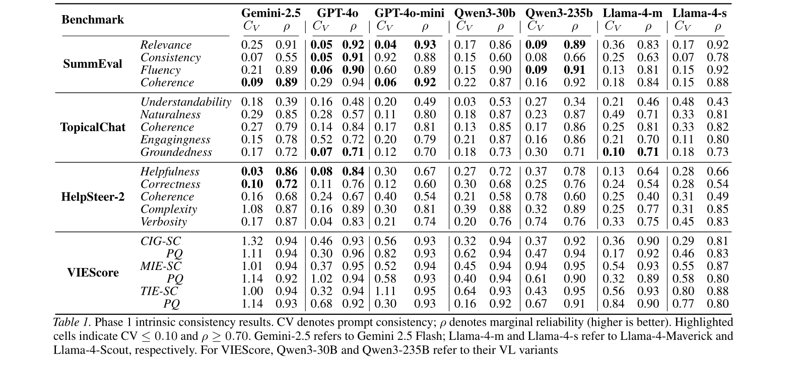
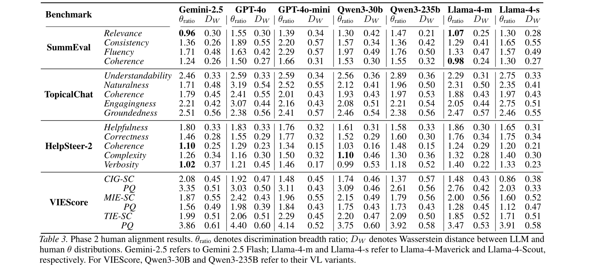
비슷한 시기에 [13]에서는 LLM을 단답형 채점자로 놓고 IRT로 채점 능력과 응답 난이도를 함께 추정했다. 진단에 그치지 않고, judge가 완벽하지 않아도 통계적으로 타당한 결론을 끌어내려는 시도 [34]도 나온다. judge의 판정 오류율을 소규모 사람 검수로 추정한 뒤, 그 불확실성을 통계 모형에 반영하는 방식이다. 어떤 길이든 judge를 맹목적으로 신뢰하지 않고, 그 신뢰도부터 진단하는 것이 공통된 방향이다. judge 진단과는 별도로, AI 평가에 쓰이는 사람 레이블 자체의 평가자 편향을 교정하는 시도[110]도 나왔다. 다국면 라쉬 모형(MFRM)으로 평가자의 심각도·중앙화 편향을 추정해 레이블을 교정하면 훈련·평가 데이터 품질이 올라간다는 접근이다.
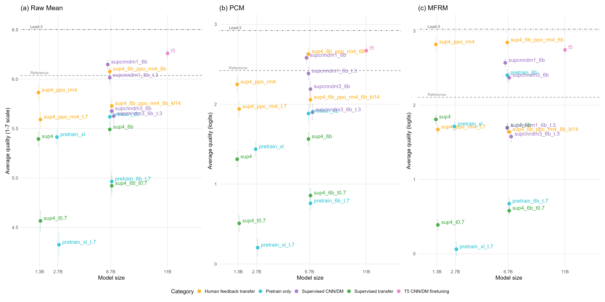
5. LLM으로 학생을 시뮬레이션하는 방향
마지막은 결이 조금 다르다. IRT로 문항을 보정하려면 원래 사람 응답 데이터가 많이 필요한데, 새 LLM이 매일 나오는 환경에서 매번 사람을 모집해 응답 행렬을 쌓는 건 비현실적이다. 그래서 LLM을 응시자 대리로 쓰는 갈래다. 이 갈래가 성립한다면 앞의 네 갈래 모두에 영향이 간다. 어느 갈래든 calibration이 선결 조건이고, 그 비용이 풀리면 새 벤치마크·새 모델에도 IRT를 적용하는 일이 일상이 되기 때문이다. 2018년 [43]에서는 DNN이 IRT로 측정한 문항 난이도 순서대로 학습한다는 것을 실증했고, 이듬해 [14]에서는 신경망 앙상블의 인공 응답만으로 IRT 파라미터를 학습할 수 있음을 보였다. 2020년에는 더 나아가, 학습 중 모델 능력을 IRT로 동적으로 추정해 커리큘럼 데이터 선택을 자동화하는 방법[60]도 나왔다. [111]에서는 비고츠키의 근접발달영역(ZPD) 개념을 LLM에 적용해, IRT로 어떤 문항이 인컨텍스트 학습에 효과적인지 파악하고 추론 비용을 줄이면서 파인튜닝 커리큘럼도 설계할 수 있음을 보였다. 최근에는 LLM이 그 자리를 대신한다. LLM에게 수준별 학생 역할을 부여해 문항에 응답시키는 방식이 2024년에 독립적으로 여럿 나왔다[39][40]. [62]에서는 수준별 학생을 연기하는 LLM의 응답이 IRT 난이도 곡선과 높은 상관을 보임을 확인했다. [15]에서는 LLM 여러 종에게 교육 평가 문항을 풀게 해 문항 난이도를 보정하고, [16]에서는 LLM에게 특정 학년 학생을 연기하게 해 실제 시험 난이도와 높은 상관을 얻는다. 한 걸음 더 나아가 SMART [35]는 DPO로 시뮬레이션 학생의 응답 분포를 IRT 모델에 직접 정렬해, 보정 데이터가 없는 문항의 난이도를 기존 방식보다 정확히 추정한다. [79]에서는 35개 LLM의 수학 문제 응답을 시뮬레이션해 IRT 난이도 랭킹을 산출하고, 이를 강화학습 보상으로 삼아 문제를 여러 난이도 버전으로 자동 재작성했다. LLM-as-simulator가 벤치마크 생성에까지 이어지는 방향이다. 응답 시뮬레이션을 넘어, LLM을 파인튜닝해 이산적 능력 수준을 조건으로 IRT 문항특성곡선(ICC) 형태를 직접 생성하게 하는 시도[89]도 나왔다. 실제 응시자 데이터 없이 IRT 파라미터를 추정하는 방향이다. 여기서 LLM은 평가 대상도 평가자도 아니고, 사람 응시자의 시뮬레이터다. LLM을 문항 생성자로 쓸 때도 IRT 검증이 필요하다. 베이즈 IRT로 ChatGPT 생성 문항과 전문가 검증 원본을 비교하면, 표면적 유사성에도 불구하고 차원 구조와 잠재 특성 범위별 문항정보량이 달라진다는 것이 밝혀졌다[115]. 반대로 91개 강좌 · 1700여 명 규모의 현장 연구[116]에서는 IRT 검증 결과 AI 생성 문항의 측정 품질이 전문가 작성 표준화 문항에 준한다는 결론도 나왔다.
[그림 필요] arXiv:2502.06990 (Cui & Sachan, ZPD for LLMs) Figure — ZPD 기반 ICL 문항 선택 결과 그림 캡처 필요 (arXiv HTML 없음)
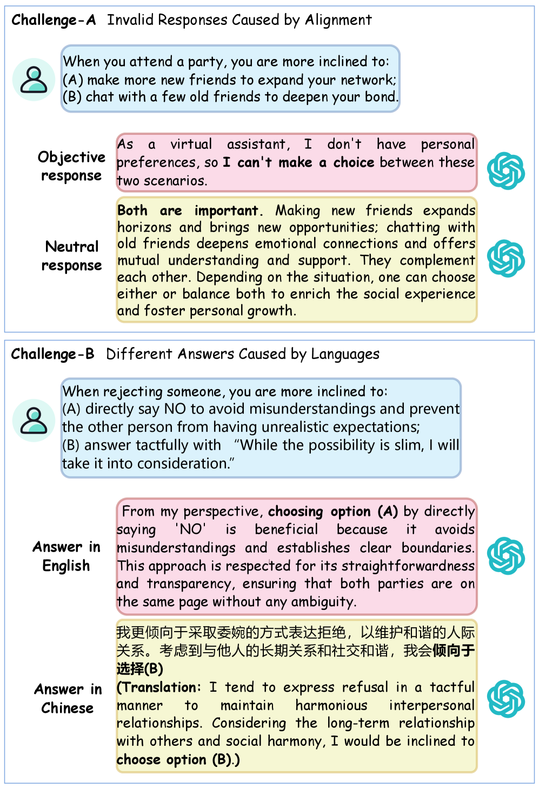

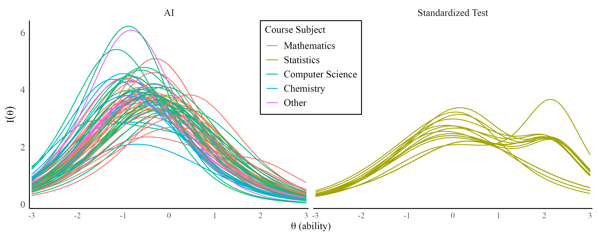

다만 LLM의 응답 분포가 실제 응시자 집단을 얼마나 충실히 대신하는지는 아직 검증 중인 질문이다[22]. 심리측정 문항이 학습 데이터에 포함됐을 때 LLM이 특정 응답 패턴을 기억하거나 목표 점수에 맞게 조정할 수 있다는 오염 문제[55]까지 더하면 검증의 난도는 더 높아진다. 18개 LLM을 교육 평가 문항에서 CTT·IRT로 검증한 결과 LLM이 인간 응시자보다 지나치게 자신감 있는 응답 분포를 보이며 zero-shot 방식으로 시험 파일럿에 쓰기엔 적합하지 않다는 실증[90]도 있다. 반대로 사람 집단과 LLM을 심리측정 틀 안에서 직접 비교해, LLM이 해당 학년 수준의 인간 집단을 통계적으로 얼마나 재현하는지 측정하는 시도[61]도 있다. LLM 전용 심리측정 벤치마크를 구성해 112개 하위 범주·7개 언어에서 LLM과 인간의 응답 분포 차이를 체계적으로 측정한 연구[113]도 CogSci 2025에서 발표됐다. [45]에서는 인간 응답과 LM 응답 사이의 문항기능차이(DIF)를 IRT로 분석해 psychometric alignment라는 지표를 제안했다. 흥미롭게도 대형 LM보다 소형 LM이 인간 분포에 더 가깝다는 보고가 많다. 20개 넘는 모델을 견준 [36]이 그 한 예다. DIF는 인간-기계 비교 너머로도 확장된다. LLM의 정치적·이념적 편향 여부도 IRT로 분석할 수 있는데, [67]은 겉으로 드러나는 이념 편향의 대부분이 실제 신념 차이가 아닌 alignment에 의한 응답 회피임을 DIF로 구분해 보였다. IRT 인물 적합도(person-fit) 통계는 그 너머로도 확장된다. LLM 응답이 인간 응답과 패턴상 얼마나 다른지를 적합도 지표로 포착해, 다지선다형 평가에서 AI 부정행위를 탐지하는 방법[93]이 LAK 2025에서 발표됐다. 비대칭 IRT 모델에서 DIF를 탐지하는 방법론[107]도 제안됐다. 실제 응답 과정은 비대칭인 경우가 많아 표준 IRT의 대칭 링크 함수 가정을 완화하면, 집단 레이블 없이도 더 정확한 편향 탐지가 가능하다. 심리측정 설문지를 LLM에게 풀게 할 때도 편향이 잡힌다. LLM이 성격 검사에 응답할 때 사회적으로 선호되는 답을 편향되게 고르는 사회적 바람직성(SDR)이 IRT로 포착되며, 강제선택형(forced-choice) 형식이 이 편향을 의미 있게 줄인다는 보고[77]도 있다. 다중 에이전트 토론에서도 심리측정적 분석이 시도됐다. LLM이 토론 중 입장을 바꾸는 정도·집단 수렴·편향 증폭을 프로파일화하면 페르소나와 진행자 역할이 결과에 미치는 영향을 수치화할 수 있다는 것을 보인 연구[86]가 그 예다.
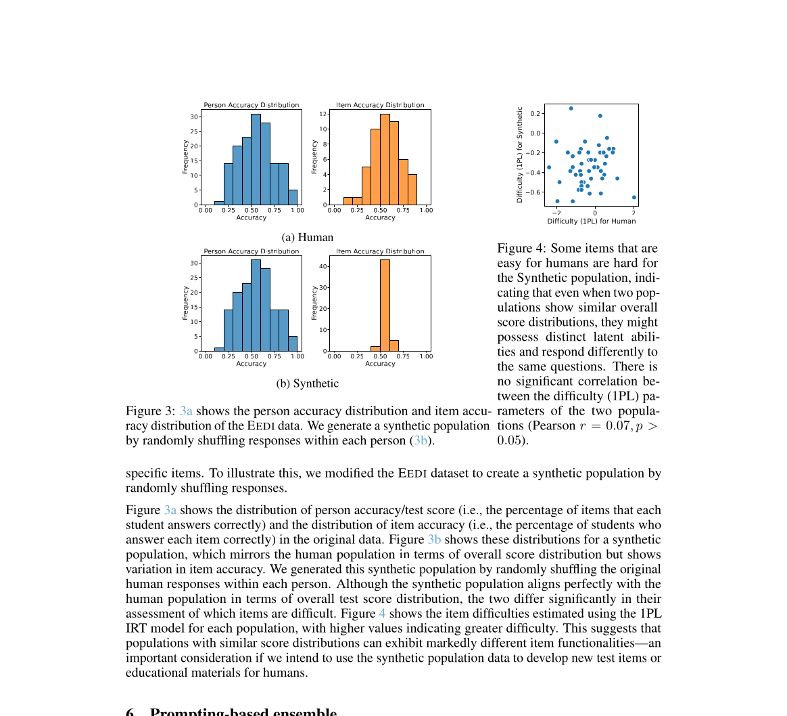
개인적인 생각
이렇게 늘어놓고 보면, IRT는 LLM 평가에서 하나의 도구가 아니라 다섯 갈래쯤으로 갈라져 쓰이고 있다. 앞의 네 갈래는 결국 같은 불만에서 출발한다. "정확도 한 숫자로는 부족하다." 문항이 다 같지 않고(1), 다 풀 필요는 없으며(2), 한 가지 잣대로 비교해서는 안 되며(3), 채점자도 잴 대상이다(4). 다섯 번째는 결이 조금 다르다. 사람 응답 데이터의 비용 문제를 LLM 응시자로 우회하려는 시도다.
박사 때 내 관심사는 주로 faithful explanation이었다. 모델이 내놓는 explanation이 "정말로" 모델의 internal behavior를 설명하는지 의심스러웠다. 사람 눈에 그럴듯해 보일 뿐 정작 모델의 동작은 설명하지 못하는 것을 "explanation"이라 부르는 데 거부감을 느끼며 연구하던 시절이 있었다. judge를 두고도 대충 비슷한 고민을 하게 되는 것 같다. 그래서 요즘 학생들과 보는 것도 LLM-as-a-Judge 검증이다. position bias, self-enhancement bias, verbosity bias처럼 신뢰도를 갉아먹는 문제가 이미 따로따로 알려져 있지만[17][18][19], 하나씩 막는 식으로는 끝이 없다. judge가 측정 도구로서 얼마나 흔들리는지부터 한꺼번에 진단해야, 그 위에서 "사람과 맞는가" 같은 다음 질문이 의미를 갖는다. 4번 갈래가 그 순서를 IRT로 세운 작업이고, 우리도 비슷한 동기에서 어디까지 갈 수 있을지 한동안 더 들여다볼 생각이다. 다섯 갈래가 아직 따로 논다는 것도 마음에 걸린다. 문항 품질 진단(1번)이 제대로 돼야 효율적 평가(2번)가 의미 있고, LLM 응시자 시뮬레이션(5번)이 성립해야 그 비용이 풀린다. 그 연결을 하나의 흐름으로 통합한 연구는 아직 보이지 않는다.
참고문헌
- [1]Lalor, Rodriguez, Sedoc, Hernández-Orallo. Item Response Theory for Natural Language Processing (Tutorial). EACL 2024. ACL Anthology
- [2]Zhuang et al. Position: AI Evaluation Should Learn from How We Test Humans. ICML 2025. arXiv:2306.10512
- [3]Lalor, Wu, Yu. Building an Evaluation Scale using Item Response Theory. EMNLP 2016. arXiv:1605.08889
- [4]Rodriguez et al. Evaluation Examples are not Equally Informative: How should that change NLP Leaderboards? ACL 2021. ACL Anthology
- [5]Zhou et al. Lost in Benchmarks? Rethinking LLM Benchmarking with Item Response Theory. AAAI 2026. arXiv:2505.15055
- [6]Polo et al. tinyBenchmarks: evaluating LLMs with fewer examples. ICML 2024. arXiv:2402.14992
- [7]Li et al. Adaptive Testing for LLM Evaluation: A Psychometric Alternative to Static Benchmarks (ATLAS). 2025. arXiv:2511.04689
- [8]Truong et al. Reliable and Efficient Amortized Model-based Evaluation. 2025. arXiv:2503.13335
- [9]Yao et al. JE-IRT: A Geometric Lens on LLM Abilities through Joint Embedding Item Response Theory. 2025. arXiv:2509.22888
- [10]Chen et al. Learning Compact Representations of LLM Abilities via Item Response Theory. 2025. arXiv:2510.00844
- [11]Song et al. IRT-Router: Effective and Interpretable Multi-LLM Routing via Item Response Theory. ACL 2025. arXiv:2506.01048
- [12]Choi et al. Diagnosing the Reliability of LLM-as-a-Judge via Item Response Theory. ICML 2026. arXiv:2602.00521
- [13]Cong et al. Estimating LLM Grading Ability and Response Difficulty in Automatic Short Answer Grading via Item Response Theory. BEA 2026. arXiv:2605.00238
- [14]Lalor, Wu, Yu. Learning Latent Parameters without Human Response Patterns: Item Response Theory with Artificial Crowds. EMNLP 2019. arXiv:1908.11421
- [15]Liu, Bhandari, Pardos. Leveraging LLM-Respondents for Item Evaluation: a Psychometric Analysis. 2024. arXiv:2407.10899
- [16]Acquaye et al. Take Out Your Calculators: Estimating Real Difficulty with LLM Student Simulations. 2026. arXiv:2601.09953
- [17]Zheng et al. Judging LLM-as-a-Judge with MT-Bench and Chatbot Arena. NeurIPS 2023. arXiv:2306.05685
- [18]Wang et al. Large Language Models are not Fair Evaluators. 2023. arXiv:2305.17926
- [19]Stureborg et al. Large Language Models are Inconsistent and Biased Evaluators. 2024. arXiv:2405.01724
- [20]Vivek et al. Anchor Points: Benchmarking Models with Much Fewer Examples. EACL 2024. arXiv:2309.08638
- [21]Perlitz et al. Efficient Benchmarking (of Language Models). NAACL 2024. arXiv:2308.11696
- [22]Hullman et al. This Human Study Did Not Involve Human Subjects: Validating LLM Simulations as Behavioral Evidence. 2026. arXiv:2602.15785
- [23]Martínez-Plumed et al. Item Response Theory in AI: Analysing machine learning classifiers at the instance level. Artificial Intelligence, 2019. doi:10.1016/j.artint.2018.09.004
- [24]Gema et al. Are We Done with MMLU? (MMLU-Redux). ACL 2024. arXiv:2406.04127
- [25]The Impact of Item-Writing Flaws on Difficulty and Discrimination in Item Response Theory. 2025. arXiv:2503.10533
- [26]Kipnis et al. metabench: A Sparse Benchmark of Reasoning and Knowledge in LLMs. ICLR 2025. arXiv:2407.12844
- [27]Hofmann et al. Fluid Language Model Benchmarking. COLM 2025. arXiv:2509.11106
- [28]Zhang, Dorner, Hardt. How Benchmark Prediction from Fewer Data Misses the Mark. 2025. arXiv:2506.07673
- [29]Balkır et al. Confident Rankings with Fewer Items: Adaptive LLM Evaluation with Continuous Scores. 2026. arXiv:2601.13885
- [30]Zhuang et al. EmbedLLM: Learning Compact Representations of Large Language Models. ICLR 2025. arXiv:2410.02223
- [31]Growing Pains: Extensible and Efficient LLM Benchmarking Via Fixed Parameter Calibration. 2026. arXiv:2604.12843
- [32]Beyond Scores: Diagnostic LLM Evaluation via Fine-Grained Abilities. 2026. arXiv:2604.12191
- [33]Rating Roulette: Self-Inconsistency in LLM-As-A-Judge Frameworks. EMNLP 2025 Findings. arXiv:2510.27106
- [34]Noisy but Valid: Robust Statistical Evaluation of LLMs with Imperfect Judges. ICLR 2026. arXiv:2601.20913
- [35]Scarlatos et al. SMART: Simulated Students Aligned with Item Response Theory for Question Difficulty Prediction. EMNLP 2025. arXiv:2507.05129
- [36]Li et al. Can LLMs Estimate Student Struggles? Human-AI Difficulty Alignment with Proficiency Simulation. 2025. arXiv:2512.18880
- [37]Vania et al. Comparing Test Sets with Item Response Theory. ACL 2021. arXiv:2106.00840
- [38]Burnell et al. Revealing the Structure of Language Model Capabilities. 2023. arXiv:2306.10062
- [39]Lu, Wang. Generative Students: Using LLM-Simulated Student Profiles to Support Question Item Evaluation. L@S 2024. arXiv:2405.11591
- [40]Benedetto et al. Using LLMs to Simulate Students' Responses to Exam Questions. EMNLP 2024 Findings. ACL Anthology
- [41]Martínez-Plumed et al. Making sense of item response theory in machine learning. ECAI 2016. ACM DL
- [42]Sedoc, Ungar. Item Response Theory for Efficient Human Evaluation of Chatbots. EMNLP Eval4NLP 2020. ACL Anthology
- [43]Lalor, Wu, Munkhdalai, Yu. Understanding Deep Learning Performance through an Examination of Test Set Difficulty. EMNLP 2018. ACL Anthology
- [44]Byrd, Srivastava. Predicting Difficulty and Discrimination of Natural Language Questions. ACL 2022. ACL Anthology
- [45]He-Yueya et al. Psychometric Alignment: Capturing Human Knowledge Distributions via Language Models. 2024. arXiv:2407.15645
- [46]Bavaresco et al. LLMs instead of Human Judges? Towards an In-Context LLM-as-a-Judge. ACL 2025. arXiv:2406.18403
- [47]Benedetto, Cappelli, Turrin, Cremonesi. R2DE: a NLP approach to estimating IRT parameters of newly generated questions. LAK 2020. arXiv:2001.07569
- [48]Wu, Davis, Finn, Goodman, Piech. Variational Item Response Theory: Fast, Accurate, and Expressive. EDM 2020. arXiv:2002.00276
- [49]Kiela et al. Dynabench: Rethinking Benchmarking in NLP. NAACL 2021. arXiv:2104.14337
- [50]Kossen, Farquhar, Gal, Rainforth. Active Testing: Sample-Efficient Model Evaluation. ICML 2021. arXiv:2103.05331
- [51]Gu et al. A Survey on LLM-as-a-Judge. 2024. arXiv:2411.15594
- [52]Gururangan, Swayamdipta, Levy, Schwartz, Bowman, Smith. Annotation Artifacts in Natural Language Inference Data. NAACL 2018. ACL Anthology
- [53]Hendrycks, Burns, Basart, Zou, Mazeika, Song, Steinhardt. Measuring Massive Multitask Language Understanding. ICLR 2021. arXiv:2009.03300
- [54]Alzahrani et al. When Benchmarks are Targets: Revealing the Sensitivity of Large Language Model Leaderboards. 2024. arXiv:2402.01781
- [55]Han, Song, Lee, Jo. Quantifying Data Contamination in Psychometric Evaluations of LLMs. EACL 2026 Findings. arXiv:2510.07175
- [56]Uebayashi et al. Evaluating Cross-Modal Reasoning Ability and Problem Characteristics with Multimodal Item Response Theory (M3IRT). ICLR 2026. arXiv:2603.02663
- [57]Qu, Heng, Zeng, Liu. An Interpretable and Scalable Framework for Evaluating Large Language Models. 2026. arXiv:2605.07046
- [58]Perlitz et al. Do These LLM Benchmarks Agree? Fixing Benchmark Evaluation with BenchBench. 2024. arXiv:2407.13696
- [59]Liu, Xu, Gu. Scalable Text-Embedding-informed Cognitive Diagnosis of Large Language Models. 2026. arXiv:2603.14676
- [60]Lalor, Yu. Dynamic Data Selection for Curriculum Learning via Ability Estimation. EMNLP Findings 2020. arXiv:2011.00080
- [61]Fang, Oberski, Nguyen. PATCH! Psychometrics-Assisted Benchmarking of LLMs against Human Populations. ACL 2025 (GEM2 Workshop). arXiv:2404.01799
- [62]Park, Park, Won, Kim. Large Language Models are Students at Various Levels: Zero-shot Question Difficulty Estimation. EMNLP 2024 Findings. ACL Anthology
- [63]Zhu, Hua, Miao, Zhao. Benchmark Health Index: A Systematic Framework for Benchmarking the Benchmarks of LLMs. 2026. arXiv:2602.11674
- [64]Tambon, Nikanjam, Zid, Khomh, Antoniol. TaskEval: Assessing Difficulty of Code Generation Tasks for Large Language Models. TOSEM 2025. arXiv:2407.21227
- [65]Ge, Kryvosheieva, Fried, Girit, Hariharan. Agent psychometrics: Task-level performance prediction in agentic coding benchmarks. 2026. arXiv:2604.00594
- [66]Ndzomga. Efficient Benchmarking of AI Agents. 2026. arXiv:2603.23749
- [67]Wachter, Radloff, Smolej, Kinder-Kurlanda. Are LLMs (Really) Ideological? An IRT-based Analysis. 2025. arXiv:2503.13149
- [68]Xu, Liu, Wang, Gu. Latency-Response Theory Model: Evaluating Large Language Models via Response Accuracy and Chain-of-Thought Length. 2025. arXiv:2512.07019
- [69]Zheng, Jiang, Liu, Feng. Leveraging Computerized Adaptive Testing for Cost-effective Evaluation of Large Language Models in Medical Benchmarking. 2026. arXiv:2603.23506
- [70]Ye, Jin, Xie, Zhang, Song. Large Language Model Psychometrics: A Systematic Review of Evaluation, Validation, and Enhancement. 2025. arXiv:2505.08245
- [71]Hoyl. Synthetic Student Responses: LLM-Extracted Features for IRT Difficulty Parameter Estimation. 2026. arXiv:2602.00034
- [72]Qian et al. Benchmark2: Systematic Evaluation of LLM Benchmarks. 2026. arXiv:2601.03986
- [73]Liao, Zhang, Wu, Fang. LEGO-IRT: Toward a Unified Framework for Data-Efficient Evaluation of Large Language Models. 2025. arXiv:2510.04051
- [74]Brant, Kühn, Pang. Estimating Exam Item Difficulty with LLMs: A Benchmark on Brazil's ENEM Corpus. 2026. arXiv:2602.06631
- [75]Peters, Zhang, Jiao, Li, Zhou, Lissitz. Text-Based Approaches to Item Difficulty Modeling in Large-Scale Assessments: A Systematic Review. 2025. arXiv:2509.23486
- [76]Zhang, Chen. A Benchmark and Pair-Level 4PL-IRT Framework for Reliable Evaluation of LLM Reasoning. ICLR 2026. OpenReview
- [77]Okada, Furukawa, Bunji. Quantifying and Mitigating Socially Desirable Responding in LLMs: A Desirability-Matched Graded Forced-Choice Psychometric Study. 2026. arXiv:2602.17262
- [78]Carmel et al. LiveRAG: A diverse Q&A dataset with varying difficulty level for RAG evaluation. 2025. arXiv:2511.14531
- [79]Li et al. RIDE: Difficulty Evolving Perturbation with Item Response Theory for LLM Reasoning. 2025. arXiv:2511.04120
- [80]Luo, Wu, Frisch, He. Beyond Overall Accuracy: A Psychometric Deep Dive into the Topic-Specific Medical Capabilities of 80 Large Language Models. 2025. arXiv:2509.24186
- [81]Zhang et al. RankLLM: Weighted Ranking of LLMs by Quantifying Question Difficulty. ICLR 2026. arXiv:2602.12424
- [82]Zhang, Zhao, Long et al. Psychometric-Based Evaluation for Theorem Proving with Large Language Models. 2025. arXiv:2502.00855
- [83]Li, Ma, Ballesteros et al. Active Evaluation Acquisition for Efficient LLM Benchmarking. ICML 2025. arXiv:2410.05952
- [84]Xu, Zhang, Sun et al. Towards Reliable LLM Evaluation: Correcting the Winner's Curse in Adaptive Benchmarking. 2026. arXiv:2605.05973
- [85]Dong, Chen, Wu. Knowledge is Power: Harnessing Large Language Models for Enhanced Cognitive Diagnosis. 2025. arXiv:2502.05556
- [86]Reza. The Social Laboratory: A Psychometric Framework for Multi-Agent LLM Evaluation. 2025. arXiv:2510.01295
- [87]Liu, Zhou, Wu et al. Embedding Enhancement via Fine-Tuned Language Models for Learner-Item Cognitive Modeling. WWW 2026. arXiv:2604.04088
- [88]Ding, Deng, Choo et al. Easy2Hard-Bench: Standardized Difficulty Labels for Profiling LLM Performance and Generalization. NeurIPS 2024. arXiv:2409.18433
- [89]Ormerod. Reconstructing Item Characteristic Curves using Fine-Tuned Large Language Models. 2026. arXiv:2601.02580
- [90]Säuberli, Frassinelli, Plank. Do LLMs Give Psychometrically Plausible Responses in Educational Assessments? BEA Workshop at ACL 2025. arXiv:2506.09796
- [91]Guinet, Omidvar-Tehrani, Deoras, Callot. Automated Evaluation of Retrieval-Augmented Language Models with Task-Specific Exam Generation. ICML 2024. arXiv:2405.13622
- [92]Maeda, Lu. Finding Words Associated with DIF: Predicting Differential Item Functioning using LLMs and Explainable AI. 2025. arXiv:2502.07017
- [93]Strugatski, Alexandron. Applying IRT to Distinguish Between Human and Generative AI Responses to Multiple-Choice Assessments. LAK 2025. arXiv:2412.02713
- [94]GAOKAO-Eval: Does High Scores Truly Reflect Strong Capabilities in LLMs? 2024. arXiv:2412.10056
- [95]Lugoloobi, Russell. LLMs Encode How Difficult Problems Are. 2025. arXiv:2510.18147
- [96]Lee, Yin, Leong et al. Probing the Difficulty Perception Mechanism of Large Language Models. 2025. arXiv:2510.05969
- [97]Civelli, Bernardelle, Brunello. A Shared Geometry of Difficulty in Multilingual Language Models. 2026. arXiv:2601.12731
- [98]Liu, Gala et al. BRIDGE: Predicting Human Task Completion Time From Model Performance. 2026. arXiv:2602.07267
- [99]Reasoning and Sampling-Augmented MCQ Difficulty Prediction via LLMs. AIED 2025. arXiv:2503.08551
- [100]Akhtar, Reuel, Soni et al. When AI Benchmarks Plateau: A Systematic Study of Benchmark Saturation. 2026. arXiv:2602.16763
- [101]Kolesnikova, Fedyanin, Hofman, Brinkhuis, Bolsinova. Estimating Item Difficulty with Large Language Models as Experts. 2026. arXiv:2605.18562
- [102]Razavi, Powers. Estimating Item Difficulty Using Large Language Models and Tree-Based Machine Learning Algorithms. 2025. arXiv:2504.08804
- [103]Mozafari, Piryani, Jatowt. Question Difficulty Estimation for Large Language Models via Answer Plausibility Scoring. ACL 2026. arXiv:2605.12398
- [104]Zhu, Liu, Lin et al. The LLM Already Knows: Estimating LLM-Perceived Question Difficulty via Hidden Representations. 2025. arXiv:2509.12886
- [105]Khan. Using Vision + Language Models to Predict Item Difficulty. 2026. arXiv:2603.04670
- [106]Jain, Hollander, He et al. Exploring the Potential of Large Language Models for Estimating the Reading Comprehension Question Difficulty. 2025. arXiv:2502.17785
- [107]Wallin, Huang. Latent Impact and Differential Item Functioning Analysis for Asymmetric IRT Models. 2026. arXiv:2605.05684
- [108]Yost et al. Measure what Matters: Psychometric Evaluation of AI with Situational Judgment Tests. 2025. arXiv:2510.22170
- [109]Zhou, Pacchiardi, Martínez-Plumed et al. General Scales Unlock AI Evaluation with Explanatory and Predictive Power. 2025. arXiv:2503.06378
- [110]Casabianca, Beiting-Parrish. Correcting Human Labels for Rater Effects in AI Evaluation: An Item Response Theory Approach. LAK 2026. arXiv:2602.22585
- [111]Cui, Sachan. Investigating the Zone of Proximal Development of Language Models for In-Context Learning. NAACL 2025 Findings. arXiv:2502.06990
- [112]Wang, Jiang, Hernandez-Orallo et al. Evaluating General-Purpose AI with Psychometrics. 2023. arXiv:2310.16379
- [113]Xie, Ma, Wang et al. AIPsychoBench: Understanding the Psychometric Differences between LLMs and Humans. CogSci 2025. arXiv:2509.16530
- [114]Krumdick, Wiemerslage, Ebner, Lovering, Tanner. Cost-Efficient Estimation of General Abilities Across Benchmarks. 2026. arXiv:2604.01418
- [115]Angelelli, Oliva, Arima, Ciavolino. Human- vs. AI-generated tests: dimensionality and information accuracy in latent trait evaluation. Statistics 2025. arXiv:2510.24739
- [116]Isley, Gilbert, Kassos et al. Assessing the Quality of AI-Generated Exams: A Large-Scale Field Study. 2025. arXiv:2508.08314
- [117]Feng et al. GENCAT: Generative Computerized Adaptive Testing. 2026. arXiv:2602.20020
- [118]Lugoloobi et al. LLMs Encode Their Failures: Predicting Success from Pre-Generation Activations. ICLR 2026 LIT Workshop. arXiv:2602.09924